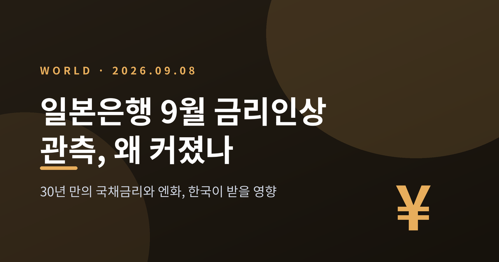
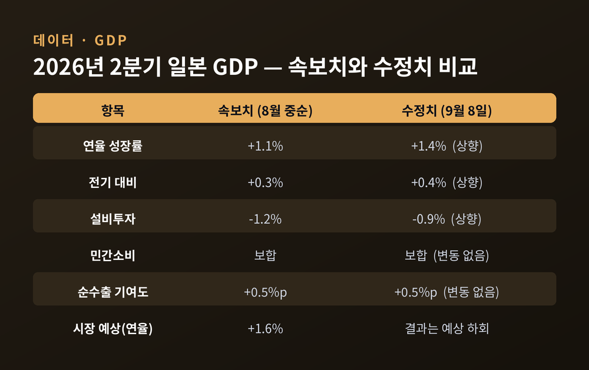
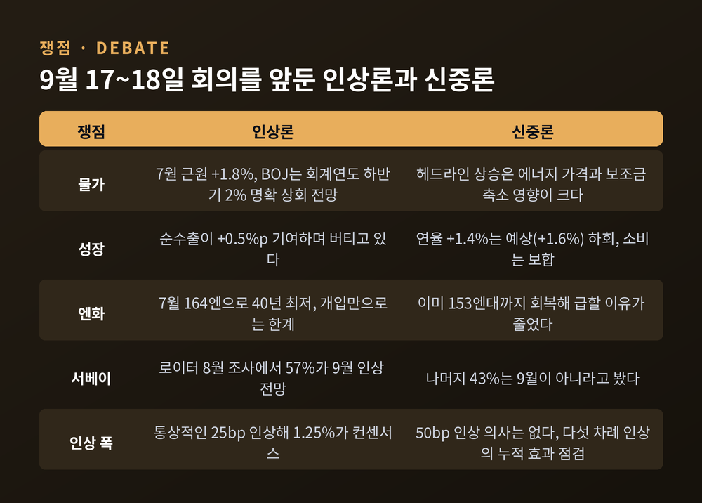
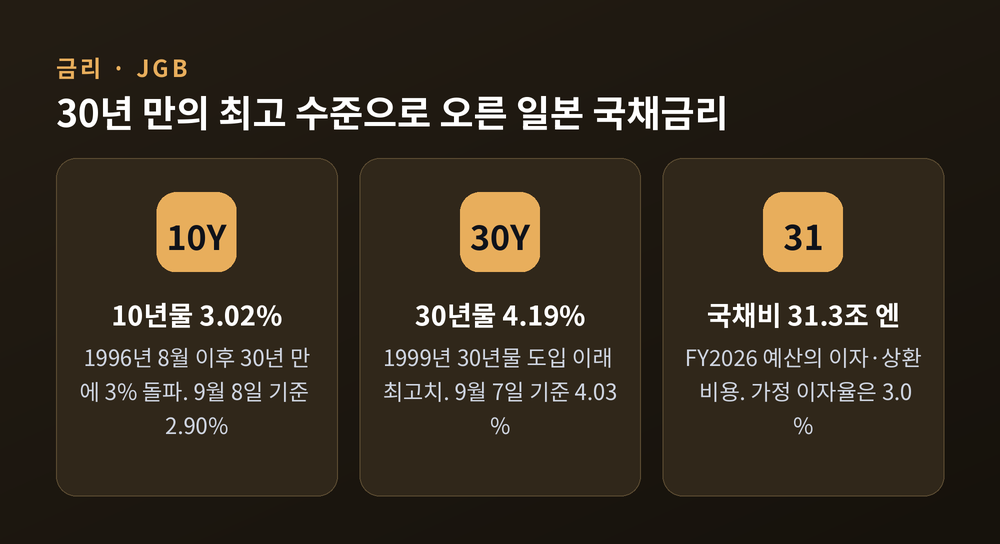
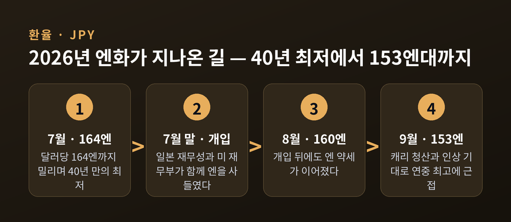
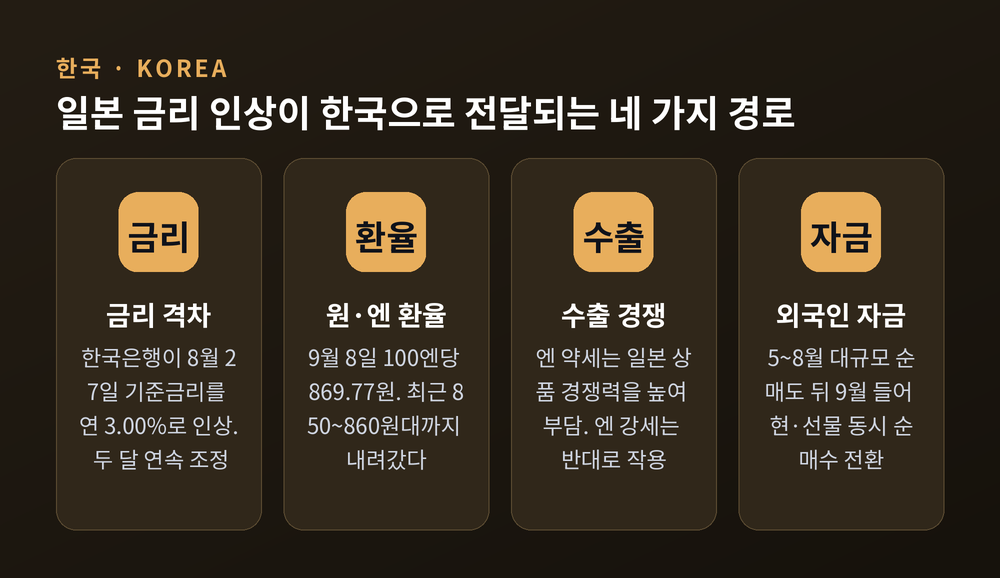

2026년 9월 8일 일본 내각부가 2분기 GDP 수정치를 발표했습니다. 이번 글에서는 이 발표를 계기로 커진 9월 일본은행 금리인상 관측과, 30년 만의 최고 수준으로 오른 일본 국채금리, 그리고 한국이 받을 영향을 정리해 보겠습니다.
먼저 세 줄로 요약합니다.
첫째, 일본 2분기 성장률은 연율 1.4%로 상향됐지만 시장 예상(1.6%)에는 못 미쳤습니다.
둘째, 9월 17~18일 일본은행 회의에서 정책금리를 1.00%에서 1.25%로 올린다는 관측이 우세합니다.
셋째, 일본 10년물 국채금리는 30년 만에 3%를 넘었고, 그 파장은 엔화와 한국 시장까지 이어집니다.

일본 내각부가 발표한 2026년 4~6월 GDP 2차 추계는 연율 +1.4%였습니다. 8월 중순 속보치 +1.1%에서 올라갔습니다. 전기 대비로는 +0.3%에서 +0.4%로 상향됐습니다.
상향을 이끈 항목은 설비투자입니다. 속보치에서 -1.2%였던 설비투자가 -0.9%로 개선됐습니다. 다만 이코노미스트 예상치인 -0.8%보다는 여전히 부진합니다.
나머지는 움직이지 않았습니다. 일본 GDP의 절반 이상을 차지하는 민간소비는 보합이었습니다. 순수출 기여도는 +0.5%포인트로 속보치와 같았습니다.
그리고 중요한 대목이 하나 더 있습니다. 시장이 기대한 중앙값은 연율 +1.6%였습니다. 상향됐지만 컨센서스는 하회한 숫자입니다. 발표 당일 달러·엔은 153엔대였습니다.

일본은행의 다음 금융정책결정회의는 9월 17~18일입니다. 현재 정책금리는 연 1.00%입니다. 1995년 9월 이후 31년 만의 최고 수준입니다.
일본은행은 올해 6월 회의에서 25bp를 올려 1.00%로 만들었고, 7월에는 동결했습니다. 시장은 이번에 다시 25bp를 올려 1.25%로 갈 것으로 봅니다.
우에다 가즈오 총재의 발언이 결정적이었습니다. 9월 초 미국에서 열린 G20 재무장관·중앙은행총재 회의 직후, 그는 이번 달 회의를 포함해 매 회의에서 금리 인상을 검토 대상에 올린다는 취지로 말했습니다. 니혼게이자이신문(닛케이 아시아)이 9월 2일 이를 보도했습니다. 같은 날 블룸버그와 재팬타임스는 "우에다가 9월 인상을 시사했다"고 전했습니다.
정권 쪽 기류도 달라졌습니다. 다카이치 사나에 총리의 경제 자문인 아이다 다쿠지 씨는 일본은행이 9월에 올리고 내년 1월까지 한 번 더 올릴 것으로 본다고 밝혔습니다. 그동안 완화 선호로 분류되던 다카이치 정권 안에서도, 과도한 엔 약세를 막으려면 추가 인상이 필요하다는 인식이 넓어졌다는 해석이 나옵니다.
한쪽 이야기만 들으면 판단이 기웁니다. 두 진영의 논거를 나란히 두겠습니다.
인상론. 첫째, 물가입니다. 7월 일본 전국 소비자물가는 헤드라인 +1.9%, 신선식품을 제외한 근원 +1.8%였습니다. 6월의 +1.6%에서 올라섰습니다. 정부 에너지 보조금이 줄고 중동 정세로 유가가 오르면서, 에너지 가격이 2025년 11월 이후 처음 상승 전환했습니다. 일본은행 스스로 2026 회계연도 하반기부터 근원물가가 2%를 명확히 웃돌 것이라고 밝혔습니다.
둘째, 서베이도 돌아섰습니다. 로이터가 8월 17~24일 실시한 조사에서 57%가 9월 인상을 전망했습니다. 7월 조사에서 크게 뒤집힌 결과입니다. 54명 중 35명은 2027년 3월 말까지 1.5% 이상에 도달할 것으로 봤습니다. 7월 조사보다 석 달 앞당겨진 시점입니다.
신중론. 로이터가 9월 8일 내놓은 분석은 결이 다릅니다. 일본은행은 이번 달에 통상보다 큰 50bp 인상을 할 뜻이 없다는 것입니다. 올리더라도 통상적인 25bp에 그치리라는 관측입니다. 시장을 흔들지 않고, 금리 인상이 기업과 가계에 주는 영향을 살필 시간을 벌기 위해서입니다.
우에다 총재 본인도 유보를 달았습니다. 지금까지 다섯 차례 인상했으니 누적 효과를 신중히 점검할 필요가 있다는 취지입니다. 일본은행 간부들은 과거 인상이 은행 대출에 미칠 영향에 경계를 강조해 왔습니다. 수십 년간 제로금리에 익숙했던 사회가 어떻게 반응할지 알 수 없다는 점도 부담입니다.
성장 자체도 강하지 않습니다. 연율 1.4%는 상향된 숫자이되 예상을 밑돌았고, 설비투자는 여전히 마이너스이며, 소비는 제자리입니다.
시장이 매긴 인상 확률도 소스마다 다릅니다. 9월 7일 블룸버그가 전한 OIS 시장 반영 확률은 90%대였고, 다른 확률 집계 사이트들은 60%대에서 80%대까지 흩어져 있습니다. 확정된 결론이 아니라 아직 갈리는 판단이라는 뜻입니다.

지금 일본에서 가장 극적으로 움직이는 것은 금리 그 자체입니다.
10년물 국채금리는 9월 1일 2.955%를 기록했습니다. 1996년 9월 이후 최고입니다. 이후 장중 3.02%까지 올라 1996년 8월 이후 30년 만에 3%를 넘었습니다. 9월 8일 기준으로는 2.90% 수준입니다. 연초 이후 83bp가 올랐습니다.
30년물은 더 극적입니다. 장중 4.19%를 찍었습니다. 1999년 30년물이 도입된 이래 가장 높은 수준입니다. 9월 7일 기준으로는 4.03%입니다.
예전 일본 채권시장은 잠들어 있었습니다. 지금은 다릅니다. 수익률곡선통제(YCC) 종료와 양적긴축, 그리고 되살아난 물가가 겹치면서 시장이 깨어났습니다.
이 변화의 청구서는 재정으로 갑니다. 일본의 일반정부 부채는 GDP 대비 204.4% 수준입니다. 2026 회계연도 일반회계 예산 122.3조 엔 가운데 국채비(이자와 상환)는 전년보다 10.8% 늘어난 31.3조 엔입니다. 이때 가정한 이자율은 3.0%로, 29년 만의 최고치입니다. 일본 부채의 약 9분의 1이 매년 만기를 맞아 더 높은 금리로 차환됩니다. 부담이 시차를 두고 쌓인다는 뜻입니다.
은행에는 양면이 있습니다. 짧게 조달해 길게 굴리는 구조이니 예대마진은 개선됩니다. 오랫동안 수익을 낼 기회가 없던 일본 은행권에는 구조적 호재입니다. 다만 보유 국채의 평가손실은 커집니다. 닛케이225는 9월 초 하루 1,274포인트(+1.96%) 올라 66,294포인트로 마감한 날이 있었지만, 은행주 부진에 밀린 날도 있었습니다.

배경을 짚어야 지금이 이해됩니다.
2026년 7월, 엔화는 달러당 164엔 부근까지 밀렸습니다. 40년 만의 최저였습니다. 일본 재무성이 엔 매수 개입에 나섰고, 규모는 약 8조 4,500억 엔(약 528억 달러)으로 추정됩니다. 이례적인 것은 그다음입니다. 미국 재무부도 함께 엔을 사들였습니다. 약 263억 달러 규모로 추정됩니다.
스콧 베선트 미 재무장관은 8월 초 이를 공식 확인하며, 추가 공동 개입에 참여하기를 주저하지 않겠다고 밝혔습니다. 명분은 분명했습니다. 엔의 추가 약세가 다른 아시아 통화를 압박해 경쟁적 평가절하를 부를 수 있다는 것입니다.
그리고 지금, 흐름이 바뀌었습니다. 8월 23일만 해도 160엔 부근이던 엔화는 9월 3~4일 하루 2% 넘게 급등했습니다. 9월 7일에는 장중 153.80엔까지 올랐습니다. 연중 최고 수준에 근접한 것입니다.
예전엔 개입으로 버티는 통화였습니다. 지금은 금리로 되돌리는 통화입니다.
여기서 파생되는 것이 엔 캐리 트레이드 청산입니다. 싼 엔을 빌려 다른 자산에 넣는 거래를 말합니다. 모건스탠리는 아직 청산되지 않은 엔 캐리 포지션을 약 5,000억 달러로 추정합니다. 값싼 엔 유동성의 수혜를 크게 받았던 자산일수록 충격이 큽니다. 암호자산, 신흥국 채권, 레버리지 주식이 그 예로 꼽힙니다. 노무라증권은 엔 약세가 지속되는 극단적 경우 일본은행이 12월까지 세 차례 연속 인상할 수도 있다고 봤습니다.

한국은 이 흐름을 남의 일로 보기 어렵습니다. 경로가 여러 갈래입니다.
첫째, 금리 격차입니다. 한국은행은 8월 27일 금융통화위원회에서 기준금리를 연 2.75%에서 3.00%로 인상했습니다. 7월에 3년 9개월 만에 올린 데 이은 두 달 연속 인상으로, 3년 7개월 만의 연속 조정입니다. 한은은 수출 호조와 내수 회복으로 예상보다 높은 성장세가 이어지는 가운데 물가가 상당 기간 목표를 웃돌 것으로 보고, 선제 대응으로 물가 오름세 확산을 막는 것이 중요하다고 설명했습니다. 같은 회의에서 올해 성장률 전망도 2.6%에서 3.3%로 크게 올렸습니다.
둘째, 환율입니다. 원·달러는 9월 3일 장중 1,355.4원까지 내렸고, 9월 4일에는 장중 1,340원대로 14개월 만의 원화 강세를 나타냈습니다. 원·엔은 9월 8일 아침 100엔당 매매기준율 869.77원이었습니다. 최근에는 850~860원대까지 내려가 2년여 만의 낮은 구간을 시험했습니다. 정리하면 엔화는 원화 대비 여전히 약하지만, 저점에서 되돌아오는 중입니다.
셋째, 수출 경쟁입니다. 엔 약세는 일본 상품의 가격경쟁력을 높여 한국 수출에 부담이 된다는 지적이 오래 있었습니다. 자동차, 기계, 철강처럼 일본과 겹치는 품목일수록 체감이 큽니다. 반대로 엔이 강해지면 그 부담이 덜어집니다. 한국은행도 일본의 인상 기조가 이어질 경우 엔화가 상대적 강세를 보일 가능성을 언급한 바 있습니다.
넷째, 자금 흐름입니다. 외국인은 코스피에서 5~8월 사이 대규모로 팔았습니다. 그러다 9월 들어 현물과 선물에서 동시에 순매수로 돌아섰습니다. 9월 7일 하루에는 약 2조 5,000억 원을 사들였습니다. 다만 월간 기준으로는 아직 소폭 순매도여서, 방향 전환이라 단정하기에는 이릅니다.
여기에 변수가 하나 더 겹칩니다. 9월에는 미국 FOMC와 일본은행 회의가 나란히 예정돼 있습니다. 두 결과가 어긋나면 환율과 자금 흐름은 더 흔들릴 수 있습니다.

전망 영역입니다. 확정된 사실이 아니라는 점을 먼저 밝힙니다.
첫 번째 관문은 9월 17~18일 회의 결과입니다. 25bp 인상이 나온다면 정책금리는 1.25%가 됩니다. 동결이라면 시장은 10월이나 12월로 시선을 옮길 것입니다. 로이터 조사에서 절반 넘는 응답자가 9월을 짚었지만, 나머지 43%는 다르게 봤다는 점도 함께 기억할 만합니다.
두 번째는 국채금리의 진로입니다. 10년물이 3%대에 안착하는지, 30년물이 4%대에서 더 오르는지가 일본 재정과 은행 손익을 가릅니다.
세 번째는 캐리 청산의 속도입니다. 서서히 풀리면 흡수되지만, 한꺼번에 몰리면 신흥국 자산 전반이 흔들립니다. 한국 증시와 채권도 그 범위 안에 있습니다.
아쉬운 점도 있습니다. 확률 수치가 소스마다 크게 다르고, 성장·물가 지표가 서로 다른 방향을 가리키고 있습니다. 지금 시점에서 한 방향을 확언하는 것은 정직하지 않습니다.
정리하면 이렇습니다.
일본이 30년 넘게 붙들고 있던 초저금리를 되돌리는 과정이 이번 회의에서 다시 한 단계를 지납니다. 숫자 하나하나보다 중요한 것은 방향입니다.
"세계에서 가장 싼 돈의 시대가 조금씩 닫히고 있습니다."
그 문이 닫히는 속도에 따라 엔화도, 한국의 환율과 자금도 함께 움직일 것입니다. 9월 18일 이후의 풍경이 지금과 같겠냐고 물으신다면, 저는 그렇지 않다고 답하겠습니다.
면책 안내 — 이 글은 공개된 자료와 보도를 정리한 정보성 글이며, 투자 권유가 아닙니다. 금리·환율·주가 전망은 상황에 따라 언제든 바뀔 수 있습니다. 투자 판단과 그 결과에 대한 책임은 투자자 본인에게 있습니다.